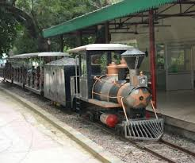
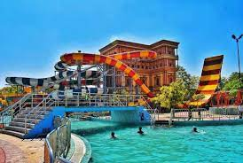
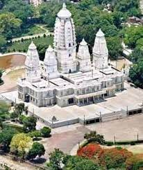
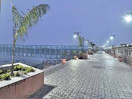
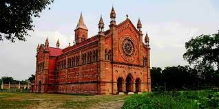

Allen Forest Zoo
Azad nagar, kanpur
Kanpur Zoological Park or Allen Forest Zoo (Hindi: कानपुर चिड़ियाघर / कानपुर प्राणी उद्यान), also called the Kanpur Zoo is the largest zoological park in North India.

Blue world
bithoor, kanpur
Blue World Park is Kanpur’s first mega themed entertainment destination . 25 acres of land featuring over 25 rides and 10 gigantic slides including Dry Rides, aquatic wonderland, 7D Theater, Sky dive and India’s biggest private musical fountain and laser show.

jk temple
Sarvodaya nagar, kanpur
JK Temple (Juggilal Kamlapat temple) is a Hindu temple in the Indian city of Kanpur, Uttar Pradesh, India.[2][3][4] It is considered to be a unique blend of ancient and modern architecture. The mandapa of the temple has been constructed with high roof for adequate ventilation of light and air.

boat club
ganga barrage, kanpur
The Ganges Barrage, officially named as the Lav Khush Barrage, this bridge across the Ganges river lies at Azad Nagar-Nawabganj in Kanpur. The construction started in 1995 and it was inaugurated in May 2000.

Memorial church
albert lane, kanpur
Originally known as the All Souls' Church, India that belongs to the Church of North India, a united Protestant denomination. It was built in 1875 in honour of British valour during the Siege of Cawnpore in 1857.
.